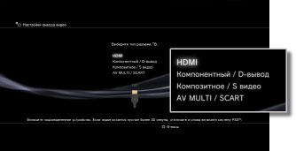
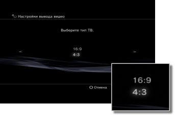

Настройки вывода видео
Выполнение настройки параметров вывода видео системы. Выбор лучших параметров вывода для используемого телевизора.
1. |
Проверьте разрешение, поддерживаемое телевизором.
Разрешение (режим видео) различается в зависимости от типа телевизора. Для получения дополнительной информации см. инструкции, прилагаемые к телевизору.
|
2. |
Выберите  (Настройки) > (Настройки) >  (Настройки экрана). (Настройки экрана).
|
3. |
Выберите [Настройки вывода видео].
|
4. |
Выберите тип разъема на телевизоре.
Разрешение (режим видео) различается в зависимости от типа используемого разъема.

| Тип кабеля |
Входной разъем на телевизоре |
Поддерживаемые видеорежимы *1 |
Кабель HDMI (продается отдельно)
 |
HDMI
 |
NTSC: 1080p / 1080i / 720p / 480p
PAL: 1080p / 1080i / 720p / 576p |
Компонентный кабель AV (продается отдельно)

Кабель D-вывод (продается отдельно)
 |
Компонентный

D-вывод *2
 |
NTSC: 1080p / 1080i / 720p / 480p / 480i
PAL: 1080p / 1080i / 720p / 576p / 576i |
Кабель AV (в комплекте)

Кабель S VIDEO (S видео, продается отдельно)
 |
Композитное

S видео*3
 |
NTSC: 480i
PAL: 576i |
Кабель AV MULTI (продается отдельно) ［VMC-AVM250］ (производства корпорации Sony)

Кабель AV (в комплекте)
Переходник Euro‐AV (в комплекте) *4
 |
AV MULTI*5

SCART*6
 |
NTSC: 480p / 480i
PAL: 576p / 576i |
| *1 |
Параметры видеорежима различаются в зависимости от региона приобретения системы PS3™. В Северное Америке, Азии и других регионах NTSC видеорежим 480i отображается как [Нормальный (NTSC)]. В Европе и других регионах PAL видео режим 576i отображается как [Нормальный (PAL)]. Для получения дополнительной информации см. инструкции, прилагаемые к устройству.
|
| *2 |
D-вывод в основном используется в Японии. От D1 до D5 поддерживает следующие разрешения:
D5: 1080p / 720p / 1080i / 480p / 480i
D4: 1080i / 720p / 480p / 480i
D3: 1080i / 480p / 480i
D2: 480p / 480i
D1: 480i
|
| *3 |
S-Video - формат, используемый в основном в Японии.
|
| *4 |
Переходник Euro‐AV в комплекте с системами PS3™ поставляется только в Европе.
|
| *5 |
AV MULTI - формат, используемый в основном в Японии. Если выбран параметр [AV MULTI / SCART], отобразится экран, на котором можно выбрать тип выводимого сигнала.
|
| *6 |
SCART - формат, используемый в основном в Европе. Если выбран параметр [AV MULTI / SCART], отобразится экран, на котором можно выбрать тип выводимого сигнала.
|
|
5. |
Установка размера экрана 3D-телевизора.
Настройте систему в соответствии с размером экрана используемого телевизора.
Если вы используете не 3D-телевизор или не выбрали вариант [HDMI] в пункте 4, этот экран не будет отображаться.
|
6. |
Изменение параметров вывода видео.
Измените разрешение для вывода видео. В зависимости от типа разъема, выбранного в пункте 4, этот экран может не отображаться.

|
7. |
Установите разрешение.
Выберите все разрешения, поддерживаемые используемым телевизором. Видео автоматически выводится с самым высоким из выбранных разрешений, возможным для воспроизводимых материалов.*
* Разрешение видео выбирается в следующем порядке: 1080p > 1080i > 720p > 480p/576p > стандартное (NTSC:480i/PAL:576i).
Если при выполнении шага 4 выбрано [Композитное / S видео], экран выбора разрешения не отображается.
Если выбрано [HDMI], можно также выбрать автоматическую настройку разрешения (устройство HDMI должно быть включено). В данном случае экран выбора разрешения не отображается.

|
8. |
Выбор типа телевизора.
Выберите вариант, соответствующий используемому телевизору. Этот параметр следует задавать только при выводе со стандартным разрешением (NTSC:480p / 480i, PAL: 576p / 576i), например если на шаге 4 выбрано значение [Композитное / S видео] или [AV MULTI / SCART].

|
9. |
Проверка параметров настройки.
Убедитесь, что изображение отображается с правильным разрешением, соответствующим телевизору. Чтобы вернуться к предыдущему экрану и изменить параметры настройки, нажмите кнопку  . .

|
10. |
Сохранение параметров настройки.
Параметры вывода видео сохраняются в системе PS3™. Далее можно настроить параметры вывода звука. Подробнее о выводе звука см. (Настройки) >  (Настройки звука) > [Audio Output Settings] в данном руководстве. (Настройки звука) > [Audio Output Settings] в данном руководстве.
|
Подсказки
- Если настройки вывода видео не соответствуют требующимся для используемого телевизора настройкам, при изменении разрешения экран может быть пустым. Однако, через некоторое время экран должен автоматически возвратиться к исходному разрешению. Если экран остается пустым более 30 секунд, выключите систему. Затем нажимайте кнопку питания на передней панели системы не менее пяти секунд, чтобы снова включить систему. Будет выполнен автоматический сброс настроек вывода видео до стандартного разрешения.
- Если устройство, не соответствующее стандарту HDCP (High-bandwidth Digital Content Protection), подключается к системе с помощью кабеля HDMI, система не может выполнять вывод видео и/или аудио.
- Защищенные авторским правом материалы на дисках Blu-ray Disc могут выводиться с разрешением 1080p только с помощью кабеля HDMI, подключенного к устройству, совместимому со стандартом HDCP.
- Если система PS3™ (серии CECH-3000/4000 или более поздней) подключена к телевизору с помощью кабеля через D-вход, компонентного кабеля AV или кабеля AV MULTI (производства корпорации Sony), аналоговый вывод видео в высоком разрешении ограничен в соответствии с технологией защиты авторских прав, используемой на дисках Blu-ray™ (AACS (Advanced Access Content System)). Диски BD с видеофильмами (BD-ROM) и диски BD, на которых записаны видеоматериалы, защищенные авторским правом (например телепередачи), выводятся в формате 480i.
- Для воспроизведения дисков BD с видеофильмами (BD-ROM) и дисков BD, на которых записаны видеоматериалы, защищенные авторским правом, подключите систему (серии CECH-4200 или более поздней) к телевизору с помощью кабеля HDMI.